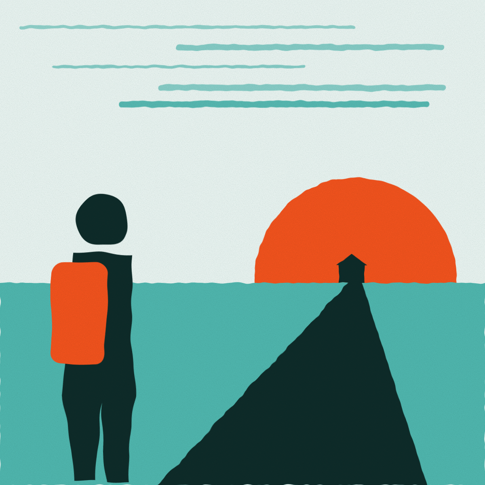
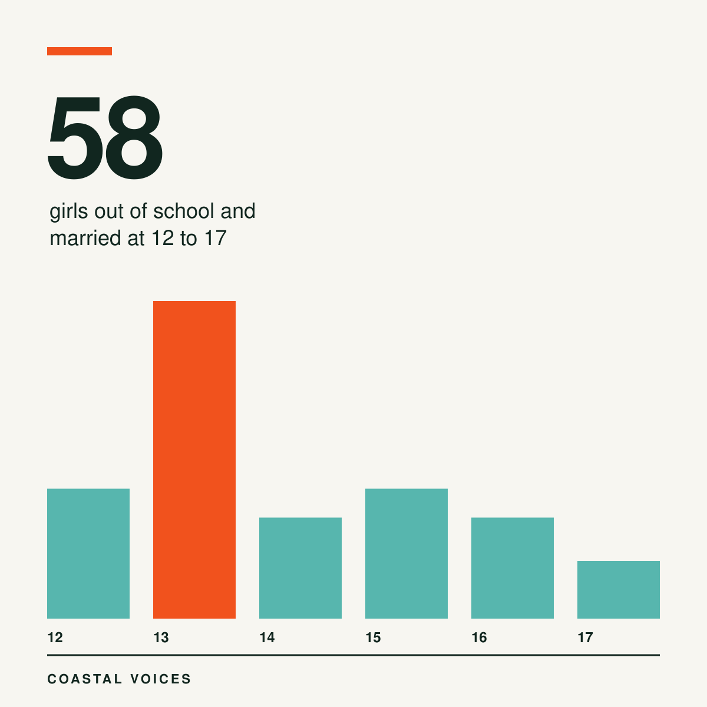
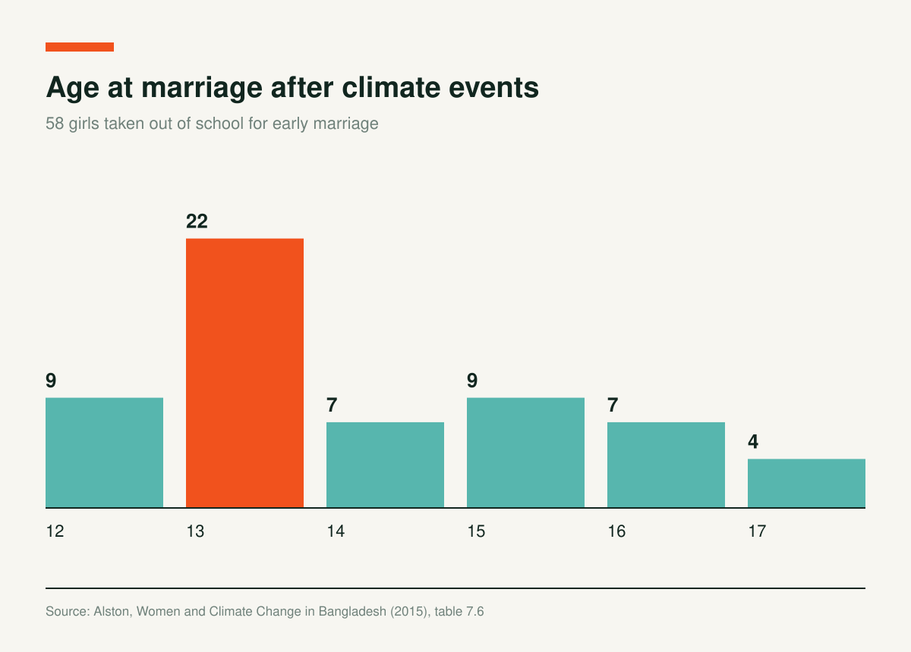

Climate Hardship Pulled 58 Girls Out of School and Into Marriage

Four years after Cyclone Sidr, a young woman in Barguna still remembered the night in 2007 when the water came at 9 pm. She swam for three hours, then spent the night in a tree. She told researchers in 2011 that she has been unwell ever since.
Sidr is one kind of event. Margaret Alston's study looks at what follows, in the years when a family cannot afford to keep children in school. Her team surveyed and interviewed people in three regions: Gaibandha, Barguna and Satkhira.

The Numbers Behind a School Bag
Fifty eight respondents said they took a daughter out of school for an early marriage. The girls were between 12 and 17 when they married. The most common age was 13: 22 of the 58.

Alston calls child and forced marriage a direct consequence of climate events and the poverty that follows. According to the survey, most of these cases were in Barguna.
Marriage was one pressure among several. The survey recorded families taking daughters and sons out of school to work, and families that went without something, or sold something, to keep a child in school. Poor roads and the lack of social security made the trip to school harder for 23% of respondents.
Voices from the Focus Groups
A young man in a Gaibandha focus group described the chain: “Because of erosion, people have lost their house, land, property. They have to stay in other people's houses. They are unable to eat/have three meals a day. So it is quite impossible for them to support their children to continue study.”
A young woman in a Satkhira focus group said: “Many of us have dropped out due to the financial crisis in our families.”
Food, Fuel and a Longer List of Losses
Alston ties schooling to wider shortages. When food is scarce, she writes, women often eat last and eat least. Respondents also found fuel harder to get: 90% said less cooking fuel was available, and 73% said they had to find new sources.
The book argues for recognising women's active contribution to adaptation and for supporting gender equality as a strategy to cope with climate change.